1048A10 air cleaner filtering element - replace
- Path
- Procedures > 10 ENGINE > 1048 ENGINE AIR SUPPLY CIRCUIT > 1048A vacuum air circuit > 1048A10 air cleaner filtering element - replace
- Kind
- repair procedure (removal / refitting; the operation number is the code)
- Applies to
- engines: 1.6 TS , 1.8 TS, 2.0 JTS, 2.5 V6, 3.2 V6, 1.9 JTD 8v , 1.9 JTD 16v, 2.0 JTS, 2.4 JTD 10v, 2.4 JTD 20v; all production periods
- Interactive page
- https://sloeber94.github.io/elrnDB-a156/en/#/3237525
Applies to: engines: 2.5 V6, 3.2 V6; all production periods
 Removing
Removing
 Refitting
Refitting1048A34 sleeve(s) from flow meter to air supply capacity case - r + r
5530B52 Battery DRIP TRAY/SUPPORT - R.R.
1. Disconnect the electrical connection from the air flow meter.
 | Name | Connector |
|---|---|---|
1 | Air flow meter |
Disconnect the air intake hose from the air filter (refer to op. 1048A21).
2. Remove the air filter (2a), complete with air flow meter (2b), removing it from the fixing openings in the front crossmember.
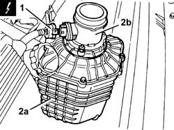
Applies to: engines: 2.5 V6, 3.2 V6; all production periods
Refitting
RemovingFit the the air filter complete with air flow meter and fix it in the openings in the front crossmember.
Connect the air intake hose to the air filter (refer to op. 1048A21).
Connect the electrical connection to the air flow meter.
5530B52 Battery DRIP TRAY/SUPPORT - R.R.
1048A34 sleeve(s) from flow meter to air supply capacity case - r + r
Applies to: engines: 1.6 TS , 1.8 TS; all production periods
Removing
Refitting5530B52 Battery DRIP TRAY/SUPPORT - R.R.
1048A28 vacuum air circuit resonator pipe - r+r
1. Loosen the fastening straps (1a), remove the sleeve (1b) from the air cleaner.
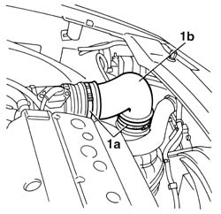
Applies to: engines: 1.6 TS , 1.8 TS; all production periods
1. Remove the cleaner from the engine compartment.
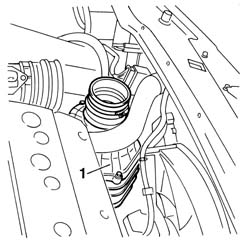
Applies to: engines: 1.6 TS , 1.8 TS; all production periods
Refitting
Removing1048A28 vacuum air circuit resonator pipe - r+r
1. Fit the air cleaner in its seat.
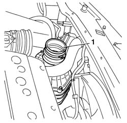
Applies to: engines: 1.6 TS , 1.8 TS; all production periods
1. Check the perfect positioning of the air cleaner protrusion (1a) , as to the rubber positioning rings (1b) .
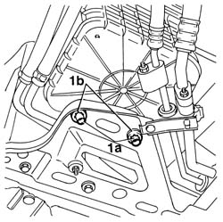
Applies to: engines: 1.6 TS , 1.8 TS; all production periods
Assemble the air cleaner sleeve .
Applies to: engines: 2.0 JTS, 2.0 JTS; all production periods
Removing
RefittingPosition the vehicle on the ramp.
Ensure that the ignition key is in OFF position, then disconnect the negative battery terminal.
| Name | Connector |
|---|---|---|
- | Battery |
Proceed with removal 1048A59 PIPE from flow meter to throttle casing hose - R.R. .
1. Remove the relay protective cover.
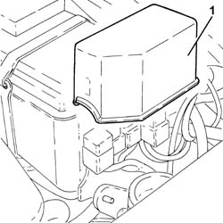
Applies to: engines: 2.0 JTS, 2.0 JTS; all production periods
1. Disconnect the electrical connection from the air flow meter.
| Name | Connector |
|---|---|---|
1 | Air flow meter |
2. Undo the nut (2a) and the bolts (2b) and remove the bracket (2c) fastening the air filter casing to the battery support.
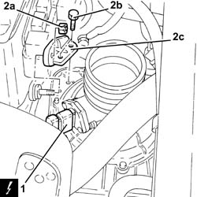
Applies to: engines: 2.0 JTS, 2.0 JTS; all production periods
Proceed with removal 7055B54 under-engine guard - r r .
1. Undo the bolt fixing the air filter cold air intake to the bodyshell.
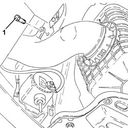
Applies to: engines: 2.0 JTS, 2.0 JTS; all production periods
1. Remove the air filter assembly (1a) together with the air filter cold air intake (1b).
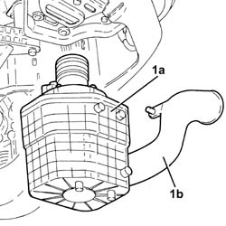
Applies to: engines: 2.0 JTS, 2.0 JTS; all production periods
Refitting
RemovingPlace the air filter assembly together with the air filter cold air intake back in its housing.
Tighten the bolt securing the cold air intake for air filter to the bodywork.
Proceed with refitting 7055B54 under-engine guard - r r .
Place the bracket fastening the air filter casing to the battery support back in its housing and secure it using the bolts and the nut.
Connect the electrical connection to the air flow meter.
Place the relay protective cover back in its housing.
Proceed with refitting 1048A59 PIPE from flow meter to throttle casing hose - R.R. .
Connect the negative (-) battery terminal.
Remove the car from the ramps.
Applies to: engines: 1.9 JTD 8v , 2.4 JTD 10v; all production periods
Removing
Refitting1048A50 air inlet pipe to turbo charger - r + r
1048A14 air cleaner filtering element - replace.
5530B52 Battery DRIP TRAY/SUPPORT - R.R.
Disconnect the cold air intake pipe from the air filter casing.
1. Remove the air filter casing.
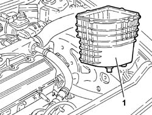
Applies to: engines: 1.9 JTD 8v , 2.4 JTD 10v; all production periods
Refitting
RemovingFit the air filter casing and connect it to the cold air intake pipe.
5530B52 Battery DRIP TRAY/SUPPORT - R.R.
Applies to: engines: 1.9 JTD 16v; all production periods
Removing
RefittingPosition the vehicle on the ramp.
Proceed with removal 1016A10 sound-proofing cover - r + r .
Proceed with removal 7055B54 under-engine guard - r r .
Proceed with removal 5530B10 battery - r+r .
Proceed with removal 5530B52 Battery DRIP TRAY/SUPPORT - R.R. .
1. Disconnect the electrical connection from the air flow meter.
| Name | Connector |
|---|---|---|
1 | Air flow meter |
2. Release earth lead (2a) from collar (2b) on the air cleaner.
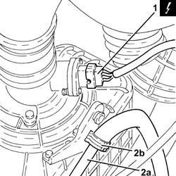
Applies to: engines: 1.9 JTD 16v; all production periods
1. Loosen the bands (1a) and remove the air intake pipe to the turbocharger with built-in resonator (1b).
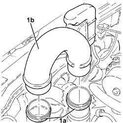
Applies to: engines: 1.9 JTD 16v; all production periods
1. Loosen the bands (1a) and remove the air supply hose between the turbocharger and the heat exchanger (1b).
2. Disconnect the cold air intake from the air filter.
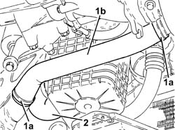
Applies to: engines: 1.9 JTD 16v; all production periods
1. Loosen the band and disconnect the the turbocharger air inlet hose from the rigid pipe, turbocharger side.
2. Loosen the band and disconnect the oil vapour recirculation pipe from the turbocharger air intake hose.
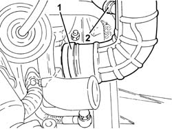
Applies to: engines: 1.9 JTD 16v; all production periods
1. Move the air cleaner assembly aside as far as necessary, then unscrew the lower bolts securing the resonator device to the air cleaner.
2. Working from beneath the car, remove the air filter (2a), complete with air flow meter (2b) and sleeve (2c).
3. Remove lower resonator device (3a) complete with sleeves(3b).
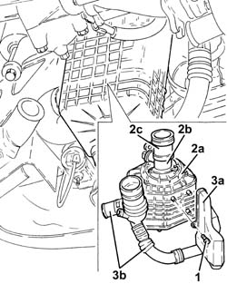
Applies to: engines: 1.9 JTD 16v; all production periods
Refitting
RemovingRefit the lower resonator with sleeves.
Replace the air filter, complete with air flow meter and sleeve, in its housing.
Tighten the lower bolts securing the resonator to the air cleaner.
Connect the oil vapour recirculation pipe, turbocharger air intake sleeve side and tighten the band.
Connect the air intake sleeve to the rigid sleeve, turbocharger side, and tighten the band.
Connect the cold air intake to the air filter.
Refit in its seating the air supply duct between turbocharger and heat exchanger and tighten the bands.
Refit the turbocharger air inlet pipe with built-in resonator in its seating and secure using bands.
Secure the earth lead to the collar on the air cleaner.
Connect the electrical connection to the air flow meter.
Proceed with refitting 5530B52 Battery DRIP TRAY/SUPPORT - R.R. .
Proceed with refitting 5530B10 battery - r+r .
Proceed with refitting 7055B54 under-engine guard - r r .
Proceed with refitting 1016A10 sound-proofing cover - r + r .
Remove the car from the ramps.
Applies to: engines: 2.4 JTD 20v; all production periods
Removing
RefittingProceed with removal 1048A50 air inlet pipe to turbo charger - r + r .
Proceed with removal 1016A10 sound-proofing cover - r + r .
Proceed with removal 5530B10 battery - r+r .
Proceed with removal 5530B52 Battery DRIP TRAY/SUPPORT - R.R. .
1. Disconnect the electrical connection from the air flow meter.
| Name | Connector |
|---|---|---|
1 | Air flow meter |
2. Remove the air filter (2a) complete with air flow meter (2b), after releasing it from the air intake pipe.
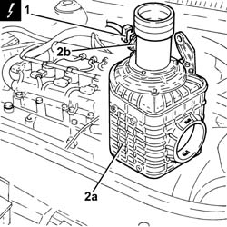
Applies to: engines: 2.4 JTD 20v; all production periods
Refitting
RemovingPlace the air filter, complete with air flow meter, back in its housing and connect it to the cold air intake.
Connect the electrical connection to the air flow meter.
Proceed with refitting 5530B52 Battery DRIP TRAY/SUPPORT - R.R. .
Proceed with refitting 5530B10 battery - r+r .
Proceed with refitting 1016A10 sound-proofing cover - r + r .
Proceed with refitting 1048A50 air inlet pipe to turbo charger - r + r .
Topics linked from this page (12)
- 1016A10 sound-proofing cover - r + r
- 1048A14 air cleaner filtering element - replace.
- 1048A28 vacuum air circuit resonator pipe - r+r
- 1048A34 sleeve(s) from flow meter to air supply capacity case - r + r
- 1048A50 air inlet pipe to turbo charger - r + r
- 1048A59 PIPE from flow meter to throttle casing hose - R.R.
- 1060G10 flow meter - r r
- 5530B10 battery - r+r
- 5530B52 Battery DRIP TRAY/SUPPORT - R.R.
- 7055B54 under-engine guard - r r
- A1B Battery ( BATTERY NEGATIVE )
- K41 Air flow meter ( ENGINE )
Topics that link to this page (34)
- B13 ENGINE STARTS WITH DIFFICULTY'
- 1004B12 power unit with manual gearbox - r+r for versions with a/c
- 1004B24 power unit with manual gearbox with hydraulic selection - r r
- 1020D36 flywheel end oil seal - replace for manual gearbox with hydraulic selection versions
- 1020D38 flywheel side oil seal - replace
- 1024B10 engine flywheel - r + r for versions with manual gearbox
- 1024B11 engine flywheel - r r for manual gearbox with hydraulic selection versions
- 1048A57 lower resonator device - r r
- 1088B20 engine cooling radiator - r + r
- 1088E11 fans with single engine duct - r+r
- 1810A20 clutch - r + r
- 1810A28 clutch - r r for manual gearbox with hydraulic selection versions
- 1820A24 thrust bearing linkage - r + r
- 2110A10 manual gearbox and differential - r + r
- 2110A11 manual gearbox with differential - r r for versions with hydraulic selection
- 2110C22 gear input shaft seals - r r
- 2127C25 PIPE FROM SELECTION SOLENOID VALVE TO ENGAGEMENT/SELECTION ACTUATOR - R.R.
- 2127C26 PIPE FROM ODD GEARS ENGAGEMENT SOLENOID VALVE TO SELECTOR/ENGAGEMENT ACTUATOR - R.R.
- 2127C27 PIPE FROM GEAR ENGAGEMENT SOLENOID VALVE TO ENGAGEMENT/SELECTOR ACTUATOR - R.R.
- 2127C28 PIPE FROM CLUTCH ENGAGEMENT SOLENOID VALVE TO CLUTCH HYDRAULIC ACTUATOR - R.R.
- 2127C40 hydraulic speed selection hydraulic actuator unit and clutch - r r
- 2127C45 CLUTCH OPERATING CYLINDER, of electrohydraulic selection - R.R .
- 2127C48 GEAR ENGAGEMENT ELECTRO-HYDRAULIC SELECTION DEVICE - R.R.
- 2127C52 EVEN AND UNEVEN GEAR ENGAGEMENT SOLENOID VALVES - R.R.
- 2127C56 CLUTCH SOLENOID VALVE - R.R.
- 2127E40 hydraulic selection gearbox speed selection position sensor - r r
- 2127E42 hydraulic selection gearbox shift position sensor - r r
- 2127E52 hydraulic selection gearbox input shaft speed sensor - r r
- 2127E94 wiring for manual gearbox hydraulic selection system on hydraulic selection unit r r or change
- 2130B36 automatic tranmission valve cover r r
- 2130B40 gear selection solenoid unit - r r
- 2135B58 electronic automatic transmission system wiring - r r
- 5040A57 evaporator inlet pipe - r r
- 5040A72 evaporator outlet pipe - r r